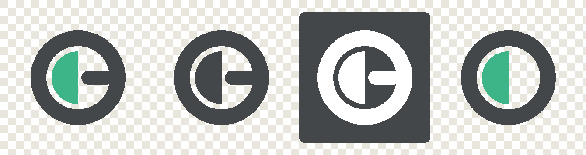
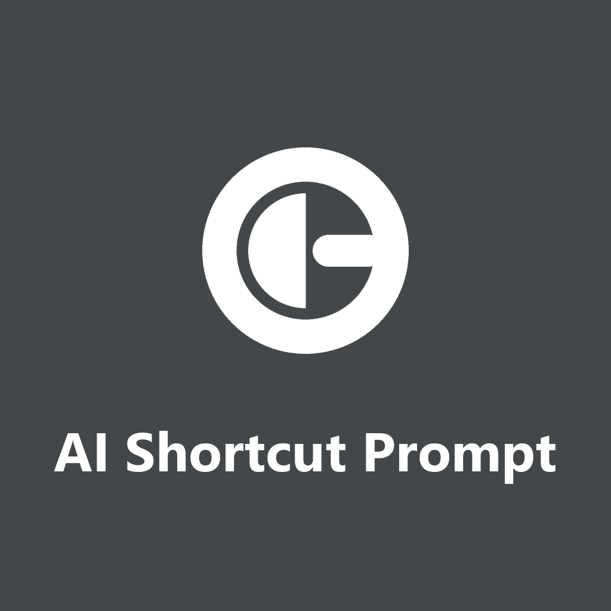
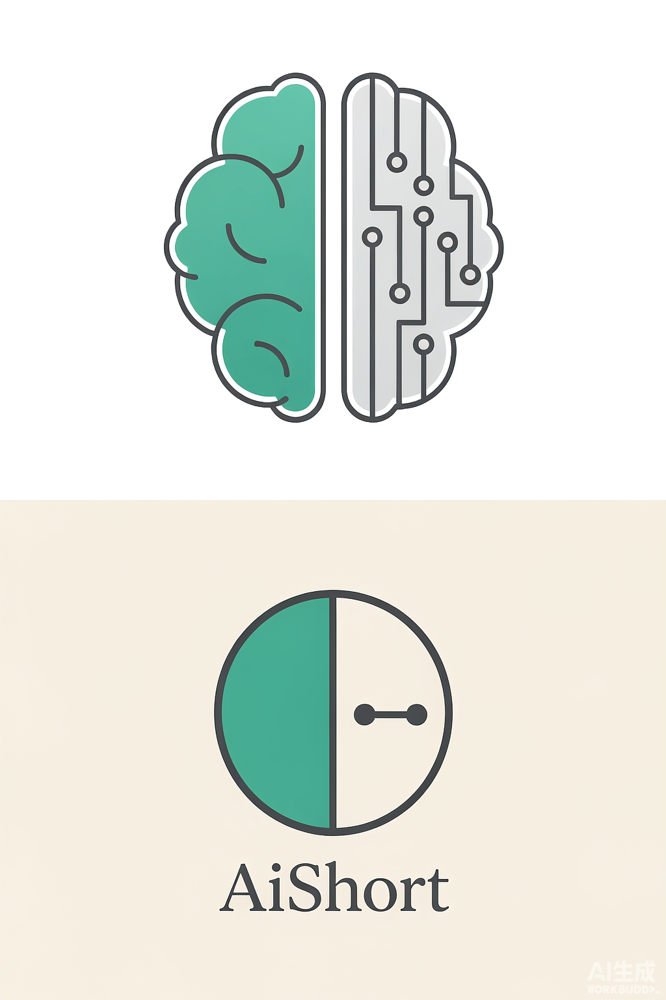
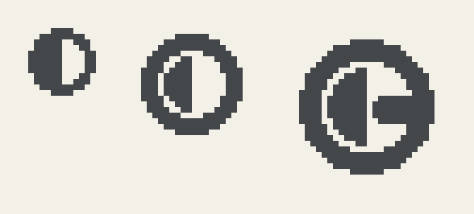
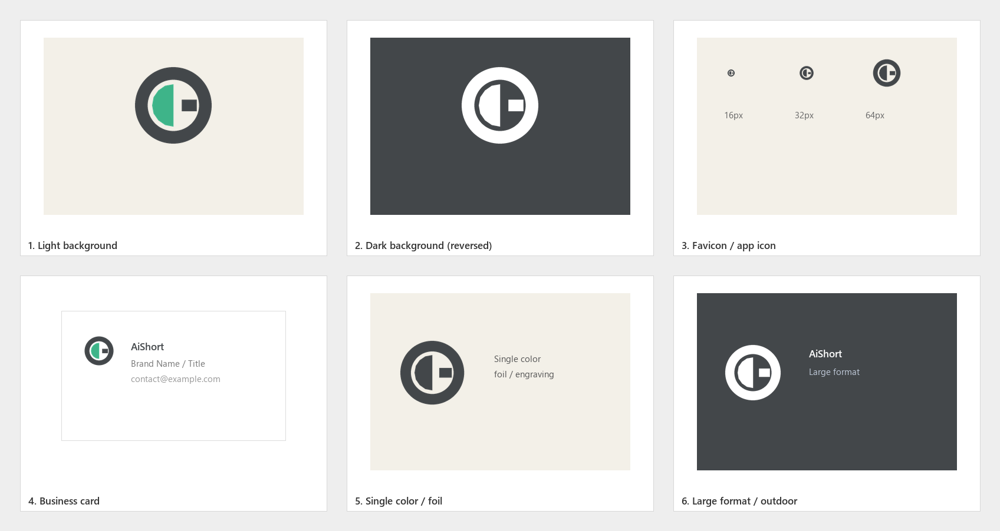

二 分 圆 盘 · The Direct Line
品牌标志规范 v2 · 取代 v1「切角卡片」捷径不是多画一条线，而是删掉绕远的那些。 THE SHORTCUT IS WHAT YOU DELETE, NOT WHAT YOU ADD
一个圆盘被竖直直径一分为二。左半实心——这是已经攒下的 5000+ 条提示词，是存量，是打开就能用的积累；右半留白，一条圆头直线直连两端——这是抄近道，从问题直达答案。
原标志的右半是一片布满 6–8 个节点的直角电路走线。新标志把它删到只剩一条直连段。被删掉的那段绕路，就是「捷径」本身。这符合留白方法论的核心判断：一个标志的力量来自被删掉的部分，而不是被加上的部分。
左半实心面代表已积累的提示词库。单一闭合面，在任何尺寸下都可辨。
直角折线删至一条直连段，端点即圆头。不新增符号，只做删减。
深色外环收口，中缝留白形成呼吸。形制完整，一眼可辨。
整枚标志只由 3 个几何图元组成（16px 简化版为 2 个）。图元越少，小尺寸越稳。
| 要素 | 数值（100×100 画布） | 说明 |
|---|---|---|
| 外环 | r=36 · 线宽 12 | 外边界至画布边缘留 2 单位，内边界半径 30 |
| 实心左半 | r=20 半圆，直边落在 x=50 | 直边即纵向中缝 |
| 中缝间隙 | 10 单位（30 − 20） | 关键值：单色下靠它拉开层级，16px 时约 1.6px |
| 直连段 | x 58→72 · 厚 11 · 圆头 | 圆头半径 5.5，等价于两个等径端点节点 + 一条直连路径 |
| 整体 footprint | 72% W × 72% H | 环形标志的标准占比 |
新标志不是凭空画出来的，而是从项目现有标志 static/img/logo.png 中提取空间事实后，压缩得到的。
| 编号 | 类别 | 观察到的事实 | 可标志化 |
|---|---|---|---|
| F1 | 主体关系 | 单一闭合轮廓被一条纵向中缝分为左右两半；左半实心填充，右半以线条为主 | High ✓ 采用 |
| F2 | 主导轴 | 纵向中缝是最强结构轴，整体轮廓近圆 | High ✓ 采用 |
| F3 | 色彩角色 | 1 主色青绿 #3EB489 + 1 深色结构 #43474A + 中性浅底 | High ✓ 采用 |
| F4 | 尺度对比 | 端点节点直径 : 轮廓宽 ≈ 1:8，节点极小且等径 | High ✓ 采用 |
| F5 | 负空间 | 右半为大面积连续负空间，形状由外轮廓收边 | Medium · 未采用 |
| F6 | 节奏 | 直角折线 + 端点圆节点重复，约 6–8 个节点 | Low · 仅保留关系 |
| F7 | 光 / 景深 | 左上到右下轻微明暗渐变，无投影 | Low · 弃用 |
F6 的 6–8 个节点在 24px 下必然粘连，只保留「节点 + 连线」这一关系；F7 的渐变违反平板约束，直接丢弃。
| 品牌关键词 | 依据的事实 | 几何决策 |
|---|---|---|
| 捷径 Shortcut（主导） | F6 直角绕行走线 | 删至一条直连段，端点即圆头 |
| 复用 Reuse | F1 左半实心块（5000+ 存量） | 实心半圆，主标记族 |
| 即取即用 Instant | F2 纵向中缝 + F3 外描边 | 深色外环 + 中缝留白 |

透明底 PNG 已单独成包，放在 png-transparent/。留白版四周留 8% 净空（推荐，符合净空区规范）；紧裁版贴齐标志边缘，适合需要自己排版的场景。两种都无白色底。


纪律：1 主色 + 1 深色结构色 + 至多 1 点缀色，全部取自参考视觉，不得引入新色相。主色沿用线上 #3EB489，更换标志不需要改动全站配色。

完整版在 16px 下右半区只有约 6px 宽，直连段必然糊掉。更关键的是：单色模式下外环与实心左半同色，间隙若低于 1px 就会塌成一个实心饼（单色崩塌）。因此 16/24px 改用简化版——保留「二分圆盘」这一最强识别点，去掉直连段，并把中缝拉到 10 单位（16px 下约 1.6px）。层级靠留白，不靠色相。
单色诊断结论：转换后仅 1 个明度层级，明度跨度 0.0000 —— PASS，形状本身承载层级关系。

| 场景 | 使用文件 |
|---|---|
| 网站页眉 / README 头图 | svg/aishort-logo-horizontal-fullcolor.svg |
| 深色模式页眉 | svg/aishort-logo-horizontal-reverse.svg |
| 头像 / App 图标 / 社交头像 | svg/aishort-mark-only-fullcolor.svg |
| 浏览器扩展 / PWA 图标 | assets/favicon.ico · assets/favicon-16.png |
| 单色印刷 / 雕刻 / 印章 | svg/aishort-logo-horizontal-mono.svg |
| PPT 等不支持 SVG 的平台 | assets/aishort-mark-{32,64,128,256,512,1024}px.png |
mark.json 后重跑脚本，不要手改 SVGpng-transparent/，无白色底板）assets/）| 文件 | 用途 |
|---|---|
svg/aishort-logo-horizontal-{fullcolor,mono,reverse}.svg | 横版组合，三种色彩版 |
svg/aishort-logo-stacked-{fullcolor,reverse}.svg | 竖版组合 |
svg/aishort-mark-only-{fullcolor,mono,reverse}.svg | 纯图形标志 |
assets/favicon-{16,20,24}.png · favicon.ico | 简化版，用于 16–24px |
assets/aishort-mark-{32…1024}px.png | 完整版位图，透明底 |
assets/apple-touch-icon-180.png · android-chrome-512.png | 平台图标 |
mark.json · mark-simplified.json | 图元源配置（改动入口） |
build_assets.py · build_lockup.py | 重新生成位图与组合 |
python mark_spec.py --config mark.json --outdir ./dist --check-mono
python build_assets.py
python build_lockup.py